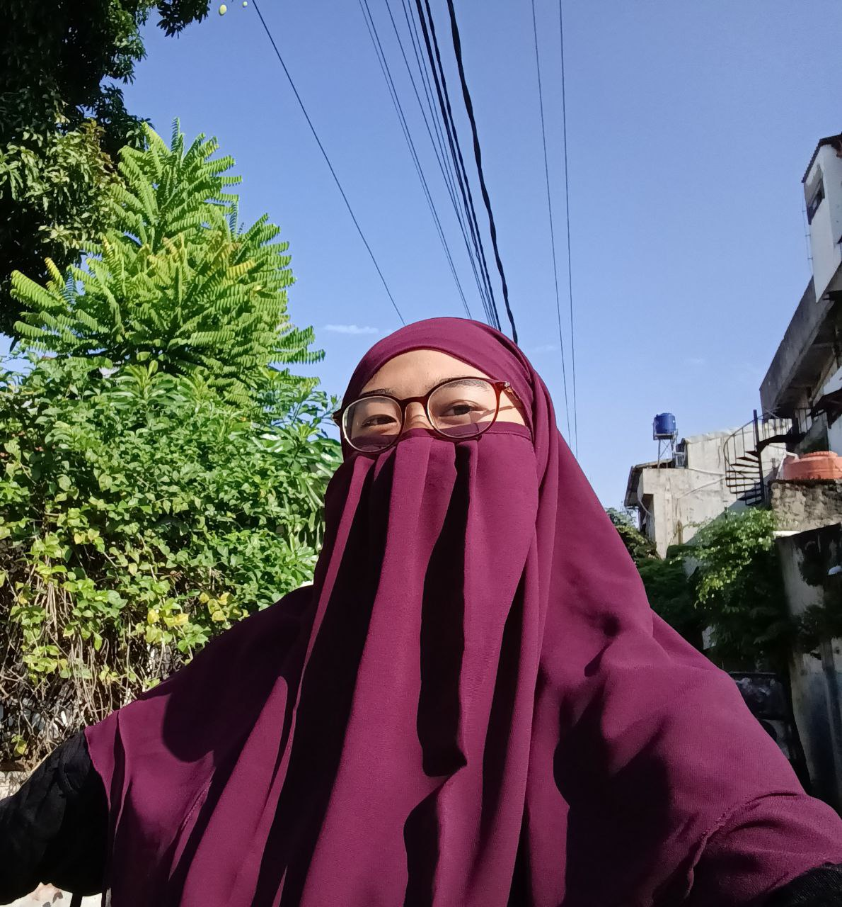

Selamat Datang di Bootskool!
Bootskool adalah platform kursus daring yang mengadopsi pendekatan bootcamp-style learning, yaitu pembelajaran intensif yang difokuskan pada penguasaan keterampilan praktis dalam waktu singkat. Bootskool dirancang untuk menjawab kebutuhan masyarakat modern yang ingin meningkatkan kompetensi tanpa harus mengikuti pendidikan formal yang panjang. Kami menyediakan berbagai program kursus berkualitas di bidang:
Fitur Unggulan Bootskool:
Bootskool terbuka untuk semua kalangan—mulai dari pelajar, mahasiswa, fresh graduate, hingga pekerja yang ingin upgrade skill atau bahkan beralih karier. Bersama Bootskool, belajar tidak lagi membosankan, tapi menjadi langkah nyata menuju masa depan yang lebih baik dan berdaya saing.
Contact Me
Fina Faizatur Rofi'ah
0858-1277-0938
Video Profil
Jam Sekarang
--:--:--